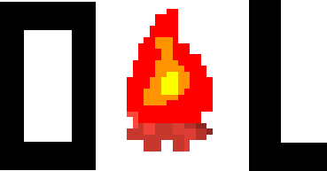

Home
Download
Download
Latest
EXE Compiled Flash version
SWF Flash version
SB2 Scratch Project
Older Version [v4]
EXE Compiled Flash version
SWF Flash version
SB2 Scratch Project
Older Version [v3]
EXE Compiled Flash version
SWF Flash version
SB2 Scratch Project
You will be redirected to Dropbox.com. You will need to click Download to your computer when the page loads.